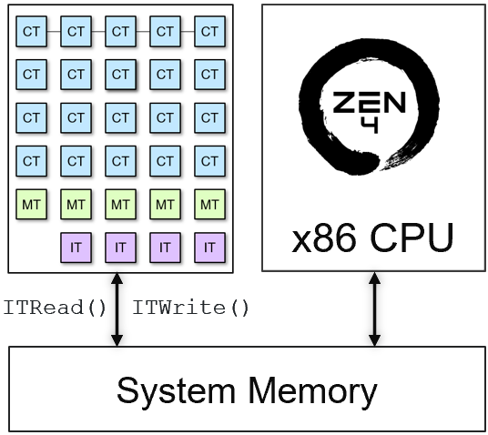

Describing an Application¶
Goals¶
Understanding the properties of a dataflow application
Learn how to describe an application using the Riallto
AppBuilderSee how to instantiate kernels and describe data movement using the call graph
Understand data movement and how to use the interface tile
Introduction¶
Building an application requires a derived instance of the Riallto AppBuilder class where kernels will be instantiated. In the AppBuilder class the callgraph() is used describes how the kernels are connected together and how data flows through those connections.
The inputs and outputs to the callgraph function are Python numpy arrays. These input and output arrays are declared on the x86 CPU and exist in user space in the external DDR5 system memory.
In the following sections, you will learn about the different components of the AppBuilder class.
Dataflow Application Properties¶
We will start by examining the properties of an application. We will use the previously discussed edge detection example and show how the AppBuilder class is used to create the application.
The same edge detection dataflow graph from earlier notebooks is shown below.

Edge detection dataflow graph
With the goal of defining the mapped dataflow graph that will run on the NPU, let us begin by identifying key observations from the dataflow graph above:
one input.
one output.
four kernels: rgb2gray, filter2D, threshold, gray2rgb.
The data flows linearly from the input to the output traversing the four kernels, the output buffer of one kernel becomes the input buffer of the following one
Kernels consume data from the input buffer and produce data into the output buffer.
Now, we can focus on subtle observations based on what we learned in earlier notebooks in section 3:
Every application needs to use an interface tile (gateways to system memory).
Communication between kernels is done using neighboring data memory or data movers via streams.
Buffers are statically allocated in data memory or the memory tile.
Input data needs to be tiled to fit in data memory.
Instantiating Kernels¶
In Riallto, AIE kernels in Python become objects of a class. AIE kernels are instantiated in the __init__ method of your class. The __init__ code and kernel instantiations looks like this:
from npu.lib.kernels import Rgba2Gray, Filter2D, Threshold, Gray2Rgba
def __init__(self):
self.rgba2gray = Rgba2Gray()
self.filter2d = Filter2D()
self.threshold = Threshold()
self.gray2rgba = Gray2Rgba()
super().__init__()
The __init__ method initializes four objects:
self.rgba2gray: an instance of the
Rgba2Graykernel class.self.filter2d: an instance of the
Filter2Dkernel class.self.threshold: an instance of the
Thresholdkernel class.self.gray2rgba: an instance of the
Gray2Rgbakernel class.
The kernels are imported from npu.lib.kernel. You can also create your own kernels and instantiate them here. . We drew inspiration from Pytorch where the layers are defined in the __init__ method. See an example here
Finally, the __init__ method of the AppBuilder class (super().__init__()) is then called.
Instantiating a kernel does not run it. Kernels must be called to be executed in the application.
Calling Kernels¶
While we are using Python to build the application, kernels are written in C++. The output argument(s) of a kernel become the return value in Python. This is similar to what OpenCV does in the C/C++ vs Python API.
For instance, the rgb2gray kernel function prototype in C++ is:
rgba2gray(uint8_t *in1, uint8_t *out1, int32_t nbytes){..}
In Python the same call becomes:
out1 = rgb2gray(in1, nbytes)
Kernels with multiple outputs, the return will be a tuple.
Describing Data Movement¶
To define data movement between the kernels we use the mandatory callgraph method. The purpose of the callgraph method is to define the topology of our dataflow graph. We use it to specify how the nodes and the buffers are connected thereby describing how data flows through the graph. callgraph is inspired by the Pytorch forward method. It is a central part of the class that describes how our kernels are
connected and how data is scheduled throughout our application kernels.
A simplified data movement for the edge detection application is shown below:
def callgraph(self, x_in:np.ndarray, x_out:np.ndarray):
rgba2gray_output = self.rgba2gray(x_in[tile], ...)
filter2d_output = self.filter2d(rgba2gray_output)
threshold_output = self.threshold(filter2d_output, ...)
gray2rgba_output = self.gray2rgba(threshold_output, ...)
From the code snipped, you can see that the callgraph gets two input arguments x_in is the input data, and x_out is the output data (result).
We will discuss x_out in more detail later in the notebook.
Focusing on the data movement:
rgba2gray()takesx_inand producesrgba2gray_outputfilter2d()takesrgba2gray_outputproducesfilter2d_outputthreshold()takesfilter2d_outputand producesthreshold_outputgray2rgba()takesthreshold_outputand producesgray2rgba_outputWe are not showing how z is moved to
x_out, we will discuss this later
rgba2gray_output, filter2d_output, threshold_output, gray2rgba_output are variable names for the buffers shown in the DFG above. The size of these buffers is automatically inferred. The size depends on shape of the input data. This will also be covered in more detail later.
rgba2gray_output, filter2d_output, threshold_output, gray2rgba_output are arbitrary names.
Kernels can have several arguments. For example, graph nodes can have several inputs and outputs to other nodes. For simplicity, we deliberately picked a simple example where each kernel has only one input and one output. Kernels can also have Run Time Parameters. Again, for simplicity, runtime parameters will not be shown in the code for this example.
Using the AppBuilder class¶
In Riallto, mapped dataflow graphs (applications) are implemented as classes that inherit from the AppBuilder class. The callgraph function is defined within the class and is called when the application is built.
The callgraph function takes input and output data as its argument. The input and output data must be a numpy array which are then passed through a series of operations performed by the kernels before producing the final output.
Below, it is a simplification of the edge detection application:
from npu.build.appbuilder import AppBuilder
from npu.lib import Rgba2Gray, Filter2D, Threshold, Gray2Rgba
class SimplifiedEdgeDetect(AppBuilder):
def __init__(self):
self.rgba2gray = Rgba2Gray()
self.filter2d = Filter2D()
self.threshold = Threshold()
self.gray2rgba = Gray2Rgba()
super().__init__()
def callgraph(self, x_in:np.ndarray, x_out:np.ndarray):
rgba2gray_output = self.rgba2gray(x_in[tile], ...)
filter2d_output = self.filter2d(rgba2gray_output)
threshold_output = self.threshold(filter2d_output, ...)
gray2rgba_output = self.gray2rgba(threshold_output, ...)
The AppBuilder will automatically assign each kernel to a tile and configure the data movement between kernels. Where possible data will be moved between neighboring tiles using the local data memory interfaces. Where this is not possible, the streaming network will be used.
Tiled Data Movement¶
We discussed in Scaling Data Parallel Applications to Multiple Compute Tiles that the input data needs to be partitioned to fit into the data memory of each compute tile, 64KB per compute tile. For this example there are no dependencies between pixels so data can be sent in any order to the application.
If we consider a 720p image, a simple way to partition a frame is to move one row at a time into the array. We can use numpy slicing to do this. We can create a loop in the callgraph() that iterates over the image frame, moving a row of data (tile) into the array each iteration:
This tiling is used to schedule the sequencing of data via the data movers (buffer descriptors configuration) and nearest neighbor communication.
from npu.build.appbuilder import AppBuilder
from npu.lib import Rgba2Gray, Filter2D, Threshold, Gray2Rgba
class SimplifiedTiledEdgeDetect(AppBuilder):
def __init__(self):
self.rgba2gray = Rgba2Gray()
self.filter2d = Filter2D()
self.threshold = Threshold()
self.gray2rgba = Gray2Rgba()
super().__init__()
def callgraph(self, x_in:np.ndarray, x_out:np.ndarray):
for tile in range(x_in.shape[0]):
rgba2gray_output = self.rgba2gray(x_in[tile], ...)
filter2d_output = self.filter2d(rgba2gray_output)
threshold_output = self.threshold(filter2d_output, ...)
gray2rgba_output = self.gray2rgba(threshold_output, ...)
The input image is being processed one tile at the time.
Using the Interface Tile¶
Once we have defined the data movement in space, how data flow between kernels. We need to schedule the sequence of data flowing to our application, data movement in time. The amount of memory in the compute tile is limited, so we need to tile the input data. The order in which the input data is partition is what we call sequence.
To define the data scheduling, we need to use the interface tile to bring data from system memory and also to push the results to system memory. The data scheduling generates the data mover configuration that it is loaded at runtime.
To do this, we use the ITRead and ITWrite classes.
The ITRead has one argument:
inputbuffer, the portion of the input buffer we want to read. In this case, it would bex_in[tile]
The ITWrite has two arguments:
inputbuffer, result of one of our kernels. In the example above, this would bergba.bufref, the portion of the output buffer we want to write. In this case, it would bex_out[tile]
The interface tile has the capability to move data to/from non-contiguous regions in system memory. The ITWrite allows us to specify how the results from kernels are moved to system memory.
The diagram below shows a representation of the ITRead() and ITWrite():

Invalidate and flush the cache with synchronization calls
A completed version of the edge detection application, is shown below:
from npu.build.appbuilder import AppBuilder
from npu.build.itkernel import ITWrite
from npu.lib import Rgba2Gray, Filter2D, Threshold, Gray2Rgba
class CompleteEdgeDetect(AppBuilder):
def __init__(self):
self.rgba2gray = Rgba2Gray()
self.filter2d = Filter2D()
self.threshold = Threshold()
self.gray2rgba = Gray2Rgba()
super().__init__()
def callgraph(self, x_in:np.ndarray, x_out:np.ndarray):
for tile in range(x_in.shape[0]):
input_tile = ITRead(x_in[tile])
rgba2gray_output = self.rgba2gray(input_tile, ...)
filter2d_output = self.filter2d(rgba2gray_output)
threshold_output = self.threshold(filter2d_output, ...)
gray2rgba_output = self.gray2rgba(threshold_output, ...)
_ = ITWrite(gray2rgba_output, bufref=x_out[tile])
ITRead is no needed as the data movement can be inferred by the access pattern in the tiling, however it is added in this example for simplicity.
ITRead and ITWrite APIs are used for explicit description of the data movement via the interface tile. We can also describe this data movement (implicitly) using numpy slicing. See below:
def callgraph(self, x_in:np.ndarray, x_out:np.ndarray):
for tile in range(x_in.shape[0]):
rgba2gray_output = self.rgba2gray(x_in[tile], ...)
filter2d_output = self.filter2d(rgba2gray_output)
threshold_output = self.threshold(filter2d_output, ...)
gray2rgba_output = self.gray2rgba(threshold_output, ...)
x_out[tile] gray2rgba_output
In the following notebooks, we favor the implicit data movement via the interface tile using numpy slicing.
Next Steps¶
In the next notebooks you will build your own applications based on what you have just learned.
Copyright© 2023 AMD, Inc
SPDX-License-Identifier: MIT